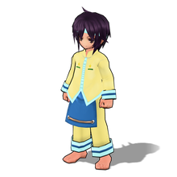
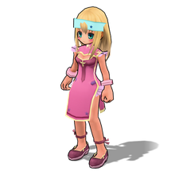
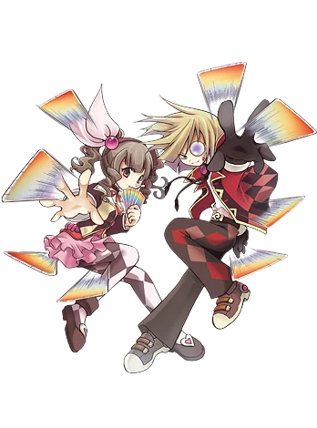
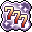
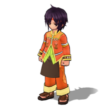
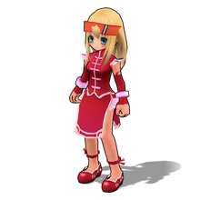
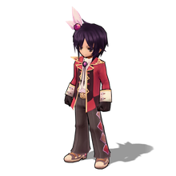
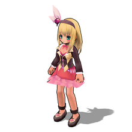
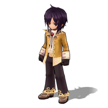
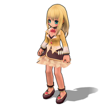

Sage Master
Sage Master

Trader set
Lv 45

How to get
- All pieces from Ryu, a reward of the Lv 45 Armor Quest
Technical job · Backpacker
A luck-based job and an expert with throwing cards, which Traders can't use.

Requirement: Trader at any Job Level.
Talk to the Sage Master and choose to browse the items on top of the shelves.
Buy a  Forbidden Book for 100,000 G.
Forbidden Book for 100,000 G.
 Throwing MasteryPassive · Max Lv 5
Throwing MasteryPassive · Max Lv 5Improves minimum ATK and L.HIT while a throwing weapon or card is equipped.
| Lv | Minimum ATK | L.HIT |
|---|---|---|
| 1 | +60 | +2 |
| 2 | +70 | +4 |
| 3 | +80 | +6 |
| 4 | +90 | +8 |
| 5 | +100 | +12 |
 Throwing Weapon ConstructionActive crafting skill · Max Lv 5
Throwing Weapon ConstructionActive crafting skill · Max Lv 5Opens the Throwing Weapon Construction synthesis interface for the selected skill level.
| Lv | SP | Cast time | Cooldown |
|---|---|---|---|
| 1 | 3 | 1 sec | 1 sec |
| 2 | 4 | 1 sec | 1 sec |
| 3 | 5 | 1 sec | 1 sec |
| 4 | 6 | 1 sec | 1 sec |
| 5 | 7 | 1 sec | 1 sec |
TrickPassive · Max Lv 5| Lv | Random minimum ATK bonus |
|---|---|
| 1 | +0 to +19 |
| 2 | +0 to +29 |
| 3 | +0 to +39 |
| 4 | +0 to +49 |
| 5 | +0 to +59 |
| Lv | MP | Cast time | Cooldown |
|---|---|---|---|
| 1 | 5 | 1 sec | 1.5 sec |
| 2 | 13 | 1 sec | 1.5 sec |
| 3 | 21 | 1 sec | 1.5 sec |
| Lv | MP | Cast time | Cooldown | Target select chance | Healing rate | Double Up healing rate |
|---|---|---|---|---|---|---|
| 1 | 16 | 2 sec | 1 sec | 30% | 160% | 320% |
| 2 | 20 | 2.5 sec | 1.25 sec | 50% | 220% | 440% |
| 3 | 24 | 3 sec | 1.5 sec | 70% | 280% | 560% |
Magic LuckPassive · Max Lv 5| Lv | Magic avoid chance | With Lady Luck Lv 5 |
|---|---|---|
| 1 | 4% | 19% |
| 2 | 8% | 23% |
| 3 | 12% | 27% |
| 4 | 16% | 31% |
| 5 | 20% | 35% |
Danger DodgePassive · Max Lv 5Reduces the chance that the character is chosen as the possession target when an attack penetrates the host's possession slots.
| Lv | Possession penetration avoidance |
|---|---|
| 1 | 10% |
| 2 | 20% |
| 3 | 30% |
| 4 | 40% |
| 5 | 50% |
| Lv | SP | Cast time | Cooldown | Hits | Damage per hit |
|---|---|---|---|---|---|
| 1 | 6 | 0.9 sec | 1.0 sec | 2 | 110% |
| 2 | 12 | 1.3 sec | 0.9 sec | 3 | 110% |
| 3 | 18 | 1.7 sec | 0.8 sec | 4 | 115% |
| 4 | 24 | 2.1 sec | 0.7 sec | 5 | 115% |
| 5 | 30 | 2.5 sec | 0.5 sec | 6 | 120% |
Applies Min Atk Down, Max Atk Down.
| Lv | SP | Cast time | Cooldown |
|---|---|---|---|
| 1 | 6 | 1 sec | 2.5 sec |
| 2 | 9 | 1.5 sec | 2 sec |
| 3 | 12 | 2 sec | 1.5 sec |
| 4 | 15 | 2.5 sec | 1 sec |
| 5 | 20 | 3 sec | 0.5 sec |

Lucky SevenActive ground skill · Max Lv 1| Lv | MP | SP | Cast time | Cooldown | Reel duration |
|---|---|---|---|---|---|
| 1 | 30 | 30 | 4 sec | 2.5 sec | 30 sec |
| Matching result | Element | Fixed damage rate |
|---|---|---|
| 1 | Dark | 619%-625% |
| 3 | Dark | 815% |
| 5 | Dark | 1,025%-1,035% |
| 7 | Dark | 1,235%-1,352% |
Bad LuckPassive · Max Lv 5| Lv | Physical avoidance chance |
|---|---|
| 1 | 4% |
| 2 | 8% |
| 3 | 12% |
| 4 | 16% |
| 5 | 20% |
| Lv | SP | Cast time | Cooldown | Damage rate | Double Up damage rate |
|---|---|---|---|---|---|
| 1 | 12 | 1.5 sec | 2 sec | 230% | 460% |
| 2 | 15 | 1.5 sec | 1.75 sec | 260% | 520% |
| 3 | 18 | 1.5 sec | 1.5 sec | 290% | 580% |
| 4 | 21 | 1.5 sec | 1.25 sec | 320% | 640% |
| 5 | 24 | 1.5 sec | 1 sec | 350% | 700% |
| Lv | SP | Cast time | Cooldown | Success chance | Damage rate | Lady Luck damage bonus | Failure Stun duration |
|---|---|---|---|---|---|---|---|
| 1 | 12 | 1.5 sec | 1 sec | 40% + 3% x Lady Luck Lv | 240% | +60% to +220% | 2 sec |
| 2 | 16 | 1.75 sec | 1 sec | 50% + 3% x Lady Luck Lv | 340% | +60% to +220% | 3 sec |
| 3 | 20 | 2 sec | 1 sec | 60% + 3% x Lady Luck Lv | 480% | +60% to +220% | 4 sec |
| 4 | 24 | 2.5 sec | 1 sec | 70% + 3% x Lady Luck Lv | 620% | +60% to +220% | 5 sec |
| 5 | 28 | 3 sec | 1 sec | 80% + 3% x Lady Luck Lv | 777% | +60% to +220% | 6 sec |
| Lv | SP | Cast time | Cooldown | Duration | Reuse timer |
|---|---|---|---|---|---|
| 1 | 20 | 1 sec | 1 sec | 60 sec | 10 sec |
| Lv | SP | Cast time | Cooldown | Gold cost | Damage rate | Double Up damage rate |
|---|---|---|---|---|---|---|
| 1 | 5 | 1.5 sec | 1 sec | 500 gold | 250% | 500% |
| 2 | 10 | 1.5 sec | 1 sec | 700 gold | 350% | 700% |
| 3 | 15 | 1.5 sec | 1 sec | 900 gold | 450% | 900% |
| 4 | 20 | 1.5 sec | 1 sec | 1,100 gold | 550% | 1,100% |
| 5 | 25 | 1.5 sec | 1 sec | 1,500 gold | 750% | 1,500% |
| Lv | SP | Cast time | Cooldown | Damage rate | Cast cancel |
|---|---|---|---|---|---|
| 1 | 20 | 0 sec | 0 sec | 100% | On affected target |
| 2 | 22 | 0 sec | 0 sec | 100% | On affected target |
| 3 | 24 | 0 sec | 0 sec | 100% | On affected target |
Rolls dice and activates a random effect based on the result.
| Lv | MP | SP | Cast time | Cooldown |
|---|---|---|---|---|
| 1 | 15 | 15 | 2.5 sec | 3 sec |
| Lv | MP | SP | Cast time | Cooldown | Jack | Queen | King | Heart |
|---|---|---|---|---|---|---|---|---|
| 1 | 12 | 12 | 2 sec | 1 sec | 20% | 20% | 15% | 45% |
| 2 | 14 | 14 | 2 sec | 1 sec | 30% | 20% | 15% | 35% |
| 3 | 16 | 16 | 2 sec | 1 sec | 20% | 28% | 22% | 30% |
| 4 | 18 | 18 | 2 sec | 1 sec | 20% | 30% | 25% | 25% |
| 5 | 20 | 20 | 2 sec | 1 sec | 20% | 30% | 30% | 20% |
| Result | Effect |
|---|---|
| Heart | Heals the selected target with 400% Holy recovery that ignores defense |
| Jack | Summons an attacking partner for 8 seconds |
| Queen | Summons a short-lived protecting partner that immediately uses a support skill |
| King | Summons a protecting partner for 12 seconds that uses its skill every 6 seconds |
Triggers an unpredictable effect.
| Lv | MP | Cast time | Cooldown |
|---|---|---|---|
| 1 | 35 | 2 sec | 3 sec |
| Lv | SP | Cast time | Cooldown | Hits | Damage rate per hit |
|---|---|---|---|---|---|
| 1 | 30 | 3 sec | 1 sec | 3 | 350% |
| 2 | 35 | 3.5 sec | 1 sec | 3 | 400% |
| 3 | 40 | 4 sec | 1 sec | 3 | 450% |
| 4 | 45 | 4.5 sec | 1 sec | 3 | 500% |
| 5 | 50 | 5 sec | 1 sec | 3 | 550% |







